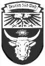

Deutsch Südwestafrika
“The inhospitable Namib Desert constituted a formidable barrier to
European exploration until the late 18th century, when successions
of travelers, traders, hunters, and missionaries explored the area.
The 1878, the United Kingdom annexed Walvis Bay on behalf of Cape
Colony, and the area was incorporated into the Cape of Good Hope in
1884. In 1883, a German trader, Adolf Luderitz, claimed the rest of
the coastal region after negotiations with a local chief. Negotiations
between the United Kingdom and Germany resulted in Germany’s annexation
of the coastal region, excluding Walvis Bay. †
The following year, the
United Kingdom recognized the hinterland up to 20 degrees east
longitude as a German sphere of influence. A region, Caprivi Strip,
became a part of South West Africa after an agreement on July 1, 1890,
between the United Kingdom and Germany. The British recognized that the
strip would fall under German administration to provide access to the
Zambezi River and German colonies in East Africa. In exchange, the
British received the islands of Zanzibar and Heligoland.
“German colonial power was consolidated, and prime grazing land passed
to white control as a result of the Herero and Nama wars of 1904-08.
German administration ended during World War I following South African
occupation in 1915.”
Source: U.S.
Department of State.
South Africian Admistration to Independence
1920 (Dec):
South Africa undertook administration of South West Africa under
the terms of Article 22 of the Covenant of the League of Nations.
The mandate agreement gave South Africa full power of administration and
legislation over the territory.
1946: Following the
League’s
supersession by the United Nations in 1946, South Africa refused
to surrender its mandate for replacement by a U.N. Trusteeship
agreement. United Nations reject
South Africa’s attempt to make Namibia its fifth province.
1960s: South West
Africa People’s Organization (SWAPO), which was backed by the Soviet Union and Cuba,
and South West Africa National Union (SWANU) launch armed struggle for Namibia’s
independence. In 1966, the South West Africa
People’s Organization (SWAPO) began guerrilla attacks on Namibia,
infiltrating the territory from bases in Zambia. After Angola
became independent in 1975, SWAPO established bases in the southern
part of the country. Hostilities intensified over the years,
especially in Ovamboland.
1978:
UN Resolution 435 declared
South Africa’s presence in Namibia illegal.
1988: An
agreement is reached
about the withdrawal of Cuban troops from Angola and South
African troops from Namibia.
1989 (Nov): Constituent
Assembly is elected. SWAPO wins 57% of the votes during first elections.
1990 (Feb):
Constitution is adopted.
1990 (Mar):
Namibia (Republic of Namibia) achieves independence.
Major Sources: U.S.
Department of State, U.S. CIA
Namibia After Independence
AFRICAN POWDERKEG
White-farm land-grab set for Namibia
192 properties listed for Zimbabwean-style confiscation
Posted: October 8, 2002
1:00 a.m. Eastern
By Anthony C. LoBaido
© 2002
WorldNetDaily.com
“SOSSOSVLEI, Namibia – Following the
lead of neighboring Zimbabwe, the government of Namibia has announced a
plan to confiscate white-owned farms.
“President Sam Nujoma recently released
a list of 192 farms to be confiscated. Among them are 99 farms owned by German
nationals and another 91 owned by white South Africans. There are 350
foreign-owned farms in Namibia. The total land area covered by these 192
farms is four times the size of Luxembourg.
“Namibia is a Marxist nation once part
of apartheid South Africa. Its government is led by the Southwest Africa
People’s Organization, or SWAPO, which was trained and funded by China in
its war of liberation from white rule. Namibia was known as Southwest Africa
until 1990, when the apartheid regime handed over control of the nation after
a 15 year ‘Border War’ against the Soviet Union and Cuba. Much of the land
problem in Namibia stretches back to the tribal rebellions of the Nama and
Herero between 1904 and 1907, which sent scores of black tribesmen out of their
ancestral lands and created cheap labor for German colonial farmers ...”
Source: WorldNetDaily
Walvis Bay
Walvis Bay, the country’s
only deep-water sea port was under British admistration before
South Africa’s 1915 occupation of South West Africa. During
World War I, Walvis Bay was administered jointly with South-West
Africa from 1922 until 1978. South Africa retained control of
the enclave for four years after South-West Africa’s
independence as Namibia, ceding it to that country
on 1 March 1994.
Damaraland, a 1908 Catholic View
The middle part of the German colony,
German Southwest Africa, between 19° and 23° S.
lat., 14° and 20° long.
Moving from the Atlantic coast towards the interior the traveller meets
first a sand-belt of forty-two miles, stripped of all vegetation and
covered with gigantic sand-dunes; then a strip of desert land about
ninety miles broad, with rugged, bare mountains and wide, barren
sand-plains. Then follows Hereroland proper, which rises to a height
of 7000 feet, and in which mountain ranges and solitary peaks succeed
long-drawn valleys, deep ravines and high plateaux. Towards the north
and east, this mountainous district passes over into the undulating
plain of the Omaheke and the Kalahari Desert, which is crossed by dry
river-beds and is sparsely inhabited. In general, the country suffers
from want of rain; it is arid, and fit for cattle-raising only;
agriculture is hardly possible except where the land is artificially
irrigated. The population is composed of the Hill Damara and the Herero;
besides these there are also some 4000 Kaffirs, Bastards, and Nama, and
1500 Christian Ovambo. The Hill Damara, or Klip Kaffirs, about 20,000 in
numbers, were the original possessors of the country, but were robbed of
their pastures and flocks by the invading Herero. Down to our times they
lived among the Herero as slaves, without rights and protection, poor and
despised; at the uprising of the Herero they naturally sided with the German
Government and thereby improved their lot considerably.
The Herero, or
Ovaherero, are a tribe of the Bantu, and immigrated, during the seventeenth
and eighteenth centuries, from the north-east into Damaraland. Their bodies
are well built, their skin is chocolate-coloured, their hair wavy and jet
black. The clothing of the men consists of an apron, made of the skin of sheep
or goats, and wound around the hips; that of the women comprises a leather cap
with a veil, a long apron, and a hide thrown over the back; numerous rings of
iron and pearls adorn their arms and legs, and a number of pearl strings
encircle their necks. The Herero are boastful, vain, avaricious, beggarly,
given to lying and cheating, dishonest, and cruel and ferocious in their
hatred; on the other hand, they are also hospitable, possess a high sense
of honour, and great love for their parents. Their religion consists in an
ancestral cult, especially of the deceased chiefs of each tribe, and a
gruesome belief in ghosts and specters, to whom they frequently offer
sacrifices. True they recognize a God of heaven and earth, but they do
no worship him; they think of him, but they do not thank him. Previous
to the insurrection of 1904-1906, which almost destroyed them, they
were divided into tribes; these were ruled by chiefs, who were at the
same time the tribal priests. In the fights with the Nama, all the Herero
had acknowledged one commander-in-chief, Maherero Kajamuaha. After his death,
in 1890, the German Government chose his younger son, Samuel Maherero,
as supreme chief, passing by the rightful heir. Generally speaking,
monogamy prevails among the Herero, though the chiefs and the wealthier
tribesmen often have several wives.
The acquisition of the present German
Southwest Africa by Germany was begun in the year 1883. The Bremen merchant
Lüderitz acquired the bay of Angra Pequena and a few strips of land from
the native chiefs; in 1884 this territory was placed under the protection of
the German Empire. The heir to the rights of Lüderitz, the German
Colonial Company for Southwest Africa, obtained more land. As Maherero,
the supreme chief of the Herero, had formerly sided with the English against
the Germans, he was forced, on 21 October, 1885, to conclude a treaty of protection
and amity with Germany, and to acknowledge the German supremacy. As this treaty
was in many regards obscure, many quarrels arose between the German Government
and the Herero chiefs; small uprisings were, however, easily quelled. The love of
freedom, predominant in the Herero, numerous injustices committed by the whites,
extortions on the part of the the white traders, and other causes finally led to
the great insurrection of the Herero in the beginning of 1904, which soon spread
throughout the colony. It took almost three years to subdue the sedition and great
sacrifices of men and money had to be made. For the nation of the Herero, who
before had numbered between 80,000 and 100,000, the revolt resulted in almost
complete annihilation. The Herero who had been taken prisoners were accommodated
in camps, where hundreds of them were carried off by virulent diseases. After peace
was made, the remnant was handed over to officials, farmers, business and private
houses, as servants. Missions in Damaraland were first begun by Protestants. Since
1844 the Rheinidch-evangelische Missionsgesellschaft laboured in Hereroland without
interruption. Before the insurrection it numbered 15 stations with 23 missionaries,
46 schools with 875 boys and 1182 girls, and counted 8300 coloured Christians. The
Fathers of the Holy Ghost were the first Catholic missionaries who, at the end of
the seventies, made the attempt to found a mission among the Herero; owing to the
intolerance of the Protestants, however, they were compelled to abandon the work
in 1881 (cf. Katholische Missionen, Freiburg, 1882, pp, 107-111). It was only when
German rule had been definitely established, that the Catholic mission was at
liberty to work in this field. On 1 August, 1892, the Prefecture Apostolic of
Cimbebasia Inferior was erected, and under it was placed the whole of Damaraland
and Ovamboland; in 1896 the territory was given in charge of the German Oblates
of Mary Immaculate. But by the Colonial Government they were forbidden to work
among the Ovambo, Hereros, and Kaffirs, and even after they had been put on the
same legal footing with the Protestants they still had to fight against odds.
All obstacles were finally removed in September, 1905. The Prefecture Apostolic
in 1908 numbered 9 stations with 22 fathers and 18 brothers (all Oblates); 10
sisters (Franciscan Sisters from Nonnenwerth); there are 850 white, 210 blacks
Catholics; 9 churches or chapels, 10 schools with 236 pupils, 1 trade school
with 14 pupils, 1 high school for boys, 1 academy for girls, 1 orphan asylum,
and 2 hospitals.
Notes: SCHINZ, Deutsch-Sudwestafrika
(Oldenburg 1891); FRANCOIS, Nama and
Damara (Margdeburg, 1896); DOVE, Deutsch-Sudwestafrika (Gotha,
1896; Berlin, 1903); SCHWABE, Mit Schwert und
pfug in Deutsch-Sudwestafrika (Berlin, 1904); PAUL, Dei
Missin in unseren Kolonien (Dresden, 1905); MEYER, Wirtschafit
und Recht der Herero (Berlin, 1905); IRLE, Dei Herero
(Gutersloh, 1906); LEUTWEIN, Eif Jahre Gouverneur Misin
Deutsch-Sudwestafrika (Berlin, 1906); Dei Katholischen Mission
(Freiburg. 1906-07), XXXV, 176-183; Jahresberichle uber dei
Entwicklung der deutschen Schutzgbielke (Berlin).
The Catholic Encyclopedia, Volume IV
Copyright © 1908 by Robert Appleton Company
Nihil Obstat. Remy Lafort, Censor
Imprimatur. +John M. Farley, Archbishop of New York
South West Africa, 1909. 229k
Detail from: General Map of Africa
The Map of Africa by Treaty,
by the late Sir Edward Hertslet.
U.S. Library of Congress, CN G8200 svar .H4
|
|
{kind=link}